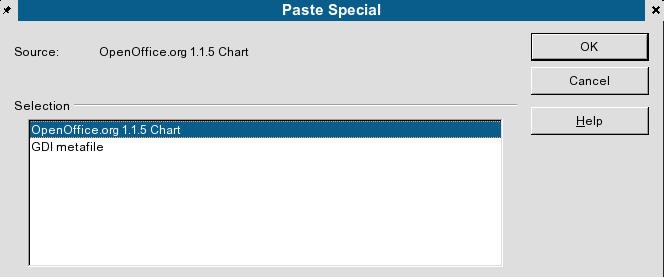
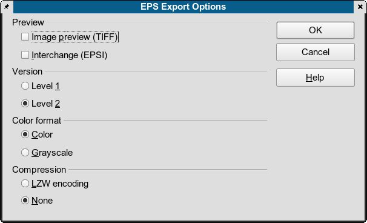

files.")
The open and XML based file format used Open Office in all versions, share some common traits with Scribus, The clear documentation and specs have helped the Scribus Team to create very useful import features. Expect more enhancements in the future. One of the pleasant surprises to see in the OpenOffice.org version 2 beta releases is the improved EPS exporter. The 1.1.x version sometimes had difficulties exporting correctly. The exporter in V 2.x in testing here seems to create better, more conformant files, which Scribus imports with little difficulties. Except for Open Office Writer files, the magic trick to get high quality imports into Scribus depends on using OO.org Draw. Almost any type of Open Office file can be imported into Scribus with high fidelity, provided you export from Draw as EPS. Native Draw files can usually be imported directly into Scribus.
The singular most important issue to take into consideration for hassle free OO.org Writer import is well chosen usage and correctly applying styles in OO.org. Doing so will greatly reduce the amount of time needed within Scribus formatting and styling text. Any special paragraph styles in your Writer document will automatically be imported into your existing Scribus layout. When importing text from OO.org there are three important options which need to be carefully considered:
|
The last option is to make permanent these options.
This is a special case, which needs to be done carefully. After you have created your Chart in Calc, then Copy > Paste Special and embed the chart not as a GDI image, but as a linked object into a Draw Document, like below:
|  |
There are two methods: First is to use the native importer. For most drawings this works very well and I have tested very complex Draw files which imported flawlessly. In some cases, especially with gradients, it may be preferable to test exporting EPS, with the settings further down. You should test both for best quality not only on screen, but exporting a PDF and then zooming is a good quality check. It is important to note Draw 3D objects do not export well, as they are limited to screen resolution. They do not print well in most cases and will appear pixellated at print resolutions.
The most reliable way I have found is to save your formula as desired and Close Math. Then open OO.org Draw create a new file. Then, Insert Object > Formula. You will have a tiny embedded square on Draw's canvas. Then, right click the embedded object > Edit Object. Then, Draw will launch Math. In Math, select Tools > Import Formula and browse to your saved formula. Then save to close the file and the embedded formula is now scalable in Draw with the context menus. Save this Draw file, then export as EPS and import into Scribus. The formulas and text will import as a grouped objects as scalable vector items. Any text is imported as outlines as well. This will result in formulas which will print with very high quality and little worries when exported as PDF. Saving the Draw file and attempting to import the Draw file with embedded objects will fail, as Scribus cannot access those object directly.
Below are the recommended EPS export settings for all versions of OO.org Draw.
|  |
Using the settings above and a recent Ghostscript (8.50+), I have encountered only minor difficulties importing files from OpenOffice.org. Even then, ungrouping the import and minor touching up is easily done. The most noticeable issue I have found is some lines on charts or freehand lines are too thin when viewed as EPS.